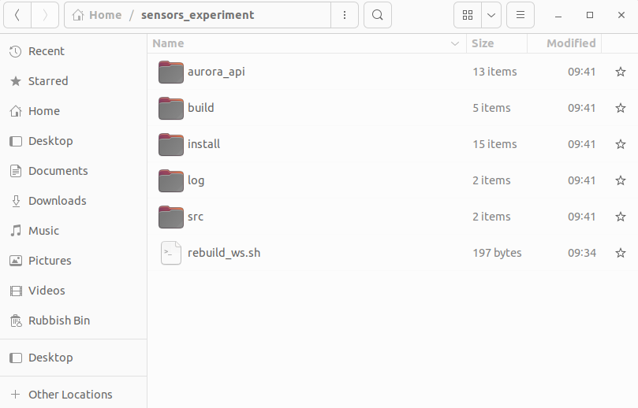

This ROS 2 package will connect the Aurora NDI system to the ROS2 network and will publish the orientation (in quaternions) and position (in mm) data for later data manipulation. This README file will guide you in installing this package on your system. This package will only work on a Ubuntu 22.04 machine and if you have installed ROS 2 Humble in your system.
It will be advised to go through the ROS 2 Humble tutorials before continuing.To install this project, follow these steps:
sensors_experiment folder from Microsoft Teamssensors_experiment folder into your system's
home directory.
Once downloaded, the sensors_experiment folder should have the following directory
structure:

aurora_api folder as the ROS 2 package depends on these functions to connect
the Aurora system to the network and retrieve data. To do that, follow these steps:
aurora_api folder by writting the following command in a new terminal:
cd sensors_experiment/aurora_apimake clean
make cleanmake
makecd ..rebuild_ws.sh file in the same terminal.
./rebuild_ws.shbash: ./rebuild_ws.sh: Permission denied, you will need to make the rebuild_ws.sh script executable on your system before
running the previous command. For that, write the following command in the terminal:
chmod +x rebuild_ws.shTo run the NDI Aurora ROS 2 node, please follow these steps:
cd sensors_experiment/source install/setup.bashros2 run aurora_ndi_pkg aurora_talkercd sensors_experiment/source install/setup.bash/aurora_transform topic. To visualise its content, write the
following command:
ros2 topic echo /aurora_transform